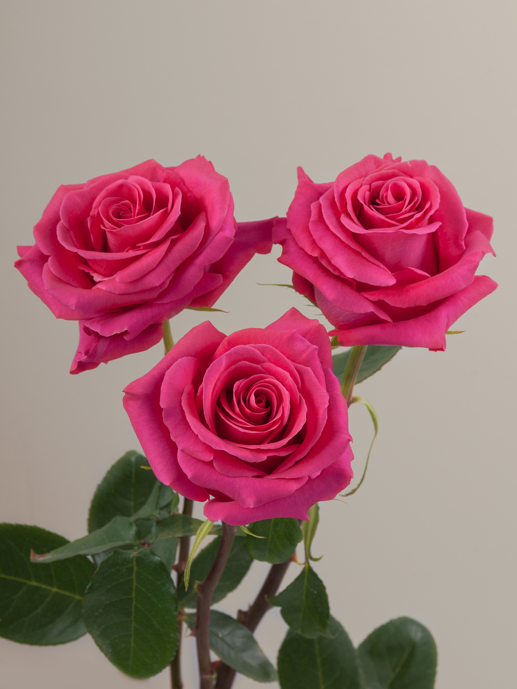

Bem-vindo ao Hair Soares Almeida
Um espaço criado para transformar sua beleza e autoestima 🌸 Trabalhamos com dedicação, cuidado e os melhores profissionais, oferecendo serviços personalizados em um ambiente acolhedor e sofisticado.
Progressiva
👉 Tempo médio: 2 a 3 horas, dependendo do cabelo.
👉 Resultados:
- Cabelo mais liso e alinhado
- Brilho intenso
- Redução do frizz
- Toque mais macio e sedoso
👉 Vantagens:
- Mais praticidade no dia a dia
- Durabilidade de até 6 meses
Alisamento Orgânico
👉 Como funciona:
- Sem formol, usa ácidos como lático, tanino e glioxílico
- Escova e prancha para selagem
👉 Tempo médio: 2 a 3 horas
👉 Resultados:
- Fios disciplinados e alinhados
- Brilho e maciez
- Aspecto natural, não “escorrido”
👉 Vantagens:
- Sem formol
- Ideal para cabelos sensíveis
- Resultado mais suave e natural
Mega Hair Bio Humano – Fita Invisível
👉 Tempo do procedimento: 1h30 a 2h
👉 Vantagens da fibra Bio Orgânica:
- Aspecto muito parecido com cabelo humano
- Leve e confortável
- Fixação com fita adesiva que não agride os fios
- Mais acessível que cabelo 100% humano
- Visual natural, com volume e balanço
👉 Resultado: Visual bonito, alinhado e saudável.
